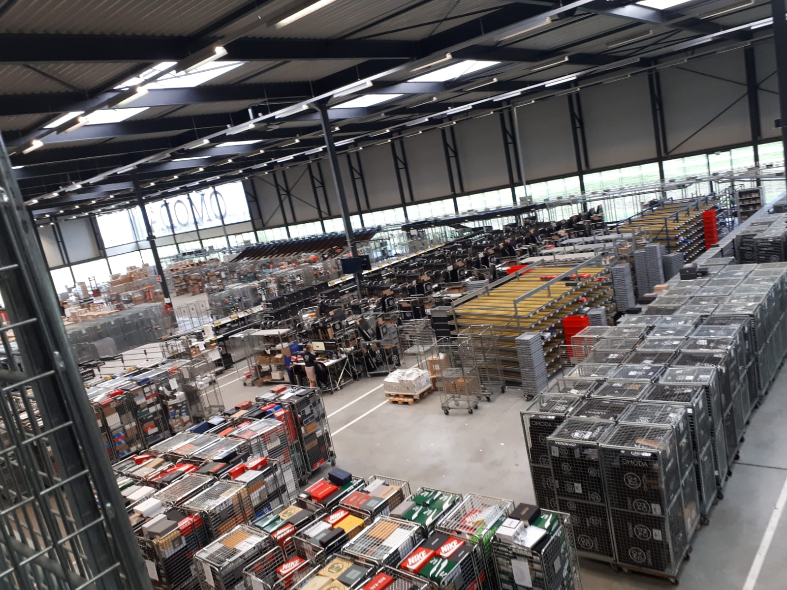

Op het HBO-I event waren een hoop bedrijven aanwezig, een aantal van deze bedrijven zijn bijvoorbeeld
Elk van deze bedrijven doet uiteindelijk iets anders, en zelfs binnen de bedrijven kan je verschillende functies hebben zoals
zowel Technisch consultant als Cloud developers bevinden zich in, bijvoorbeeld, Motion 10
naast de hoop informatie die we hebben gekregen door de dag heb ik me vooral geconcentreerd op een beter gevoel krijgen over wat ik wil, hierdoor heb ik op sommige momenten iets minder objectieve informatie gekregen, maar heb ik me over het algemeen wel beter kunnen oriënteren
Ook ben ik mee geweest op de Bedrijvensafari, hier zijn we langs 5 bedrijven gegaan en hebben we een echte inside-look kunnen krijgen
Helaas heeft niet elk bedrijf een hele grote indruk op me gemaakt, de bedrijven die dat wel hebben gemaakt zijn vooral your surprise! en colijn IT zowel your surprise! en colijn IT voelden binnen het gebouw heel kleinschalig aan, anders dan bijvoorbeeld Omoda, waar we ook langs zijn geweest
Bij omoda zagen we een groot bedrijf en een groot magazijn, duizenden schoenen kwamen hier en konden later naar klanten toe, alles gebeurde letterlijk en figuurlijk aan een lopende band
Bij your surprise! zagen we 2 delen van het gebouw, in het ene gedeelte waren de lopende banden te zien, de plek waar alle producten langsgingen, en we zagen de kantoren, de plek waar de mensen achter de computers zich verscholen hielden
echter was dit kleinschalige, hoewel mijn voorkeur daar vooralsnog naar uitgaat, niet wat mij het meeste aantrok naar deze bedrijven
Op de dag van de Bedrijvensafari heb ik 2 soorten bedrijven gezien, de één probeerde zo efficiënt mogelijk te werken, zoals omoda In het tweede soort bedrijf zag ik een betekenis van vooruitgang of verbetering, of dat nou ging om een product 'verbeteren' of leuker maken, zoals bij your surprise! of om je producten beter te kunnen visualiseren zoals bij Colijn IT